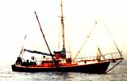
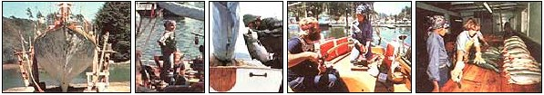

"You've got to be kidding!" the fisherman scoffed. "You can't catch salmon with a sailboat these days!
We smiled but didn't bother to argue . . . after all, we'd already spent seven months of our time, all the energy we could muster, and most of our available money working under the skeptical eyes of local fisherfolk.
Our boat Choice (she's a 44-foot, ferro-cement, double-ender with a cutter rig) was originally built by northern Californian Stan Clark . . . who constructed the vessel behind his house in midtown Fort Bragg. Ordinarily, a ferro-cement boat can be completed in less than 12 months, but it took Stan years of spare-time work to finish this one. In fact, by the time the sailboat was launched, her lines were almost as much a part of the town as were the bakery, the drugstore, and the camera shop. The folks in his hometown were so involved in the project that, when Stan set about to cure the cement, road work in the center of the city was stopped for 30 days . . . while water from the curing process coursed down the main streets.
Stan and his artist wife Georgia had done a lot of cruising, and Choice was their ninth boat. There's no way to estimate the value of the labor involved in the construction, but the materials used cost less than $7,000. Sadly, arthritis ended Stan's seafaring days . . . and he sold the vessel without ever sailing her out of the harbor.
SEA TREASURE
I can't even swim, but the purchase of the boat inevitably brought thoughts of cruising to faraway places while writing books and articles. However, although my partner Dick and I had severed our ties with school-teaching in suburbia, we were realistic romantics . . . and figured our fantasies were only beautiful dreams. We bought Choice simply to provide ourselves with a place where we could live inexpensively while we were working at freelance writing.
As it turned out, we found the boat was just too seaworthy to leave at the dock. Choice never subjected us to the bouncing I'd known on fiberglass boats . . . and she didn't have any rattles or creaks, either. Her heavy form pressed into the sea with such quiet grace and confidence that I forgot my apprehensions about the "floating sidewalk" I'd helped to buy.
Even so, I never thought I'd be the one to suggest that we try our hands at commercial fishing . . . but Choice was docked at Noyo Mooring Basin, a fishing harbor in Mendocino County, and-as salmon season neared-angling excitement swelled in the air around us. Diesels hummed . . . sanders ground off old paint ... VHF radios announced the weather . . . some folks repaired radars or worked on tackle . . . others mended orange and green nets on the asphalt parking lot . . . and it became obvious to me what we had to do. Huge, silvery salmon waited like sunken treasure just outside the jetty, and Choice was-I decided-going to have a chance to pay her way.
THE CONVERSION BEGINS
The task of rigging our sailboat for commercial fishing meant spending all the savings that Dick and I had . . . but we couldn't pass up the opportunity for freedom that the venture offered. By angling during the April-through-September salmon season, we could (we figured) possibly earn enough money to cruise and write for the rest of the year!
But altering a ferro-cement sailboat that's reinforced with 280,000-pound tensile-strength steel is no easy task. Horizontally and vertically, the metal had been shaped in a continuous wrap for added strength, and it was covered-on both sides-with a heavy wire mesh. Cement had then been compressed into the mesh, making it necessary to rent a special drill every time we needed to make a hole for a bolt or wire.
Then, too, it took us days to chip away nearly a thousand pounds of cement ballast in the stern to make way for the Saab engine we had ordered from Norway. The fine dust from that job covered everything, getting into cupboards and coating our books and cassette tapes . . . even-when I made coffee-floating as a white powder on top of the brew.
The day the engine (which would transform our sailboat into a work-boat) finally arrived was horrendous! We hired a local wrecker to lower the new 150-HP diesel into Choice's hatchway, and Dick had to hastily disassemble several parts of the machine (which were labeled "Do Not Remove" in two languages) in order to get it through the narrow opening. Finally, though, the Saab-a fishing boat engine with hand-start capability and low-fuel consumption for thrifty salmon trolling-was jockeyed into place without a quarter of an inch to spare.
Next, the fuel tanks were lowered toward the deck . . . as spectators on the pier made bets as to whether their weight on the long arm of the crane would topple the wrecker over the edge and into the water. The job was like trying to fit large puzzle pieces into slots too small, so Dick yanked out the wooden frame from beneath the bunks in the salon, pulling out brass nails and tossing sections of maple-stained lumber into the fore-peak to make room for the heavy tanks.
When we finally heard the wrecker rattle away over the pier planks above us, we looked at each other in despair. The boat's salon was in a shambles . . . every knuckle on Dick's hands was bleeding . . . our nerves were frayed . . . we'd blown almost all our money ($6,000) on the engine, alternator, reduction gearbox, drive shaft, variable-pitch propeller, fuel tanks, keel cooler, and engine mounts . . . and there was no guarantee that we would ever catch a fish.
MORE TO COME
Once we got the mess cleaned up, we hauled the boat out of the water to sandblast it, and-while Choice was precariously perched on a rusty carriage-we refurbished her bottom, installing the keel cooler and a fathometer (it cost us about $300) to indicate ocean depth. Dick also drilled an impressive three-inch hole through the stern beak to accommodate the prop shaft, while I scraped off old and hardened sea growth. After that, we coated the hull with a gooey gray substance (called Concresive) to seal the cement. Finally, Dick added new "zincs" (to fend off electrolysis), and-reluctantly-we cut out a portion of the huge rudder to allow space for the variable-pitch propeller.
With that done, we built an icehouse on the bow to stow fish, designing it carefully so that it would look like part of the cabin. We didn't, however, purchase a radar unit or a recorder (which scans the ocean floor and indicates bait). We planned to operate the best we could without spoiling the integrity of the sailboat. We wanted to fish, but we also wanted to sail, so we had to make many compromises.
"After all," we kept telling each other, "we just have to earn enough money to pay slip fees, buy groceries, and make repairs on the boat." (One advantage: If you run a registered fishing boat, your medical and dental expenses are paid by the government!)
In order to give us more space in the stern area, Dick designed a stainless steel sleeve that allowed our tiller to be removed while trolling on our Woods-Freeman autopilot. (This latter $1,200 piece of equipment was a must!) We also bought a Carib 55 VHF radio to provide us with access to weather information and allow conversations with other members of the fleet. (By listening to local frequencies, we're sometimes able to determine good fishing spots.)
A SLOW START
On sunny afternoons, as we sat on the fantail, tied leaders, and worked on our outrigger fishing poles (actually 28-foot-long, 4inch-thick saplings cut from the forest) . . . we wondered about the wisdom of our investment. Salmon are, after all, difficult to catch. Engine noise, sound levels, electrical currents, trolling speed, bait, and gear must all be just right. And-even after all the energy, alterations, time, and money we'd put into our project-we still had no way of knowing whether Choice would be a good fishing boat. Some vessels-it seemstend to attract fish, while others repel them . . . and there isn't much an owner can do to change a "bad" fishing boat into a "good" one.
Our first trip out, which took place late in the salmon season, was a disaster. We got seasick, tangled our lines, and came back into port desperately depressed over our failure to bring in a single fish. The second time out we caught nothing but mud sharks and hake. Then-on our "try, try again" third round-we finally snagged a big king salmon worth $48. As it flopped on the end of my line like a huge silver dollar, Dick gaffed it in one swing. We were ecstatic, because that fish represented a promise of more to follow.
We're in our second year as part of the salmon fleet now. Our dinghy (Second Choice) is used as a fish-storage "slush box" and can hold as many as 50 salmon without any problem. The small boat's "keeping" capacity allows us to stay out on the open sea for three days without icing our fish: We just pump seawater over them and keep them cool in the shade of our tarp. Then, if we're out on the ocean for a day or two longer, we simply place the earliest-caught fish in the icehouse on the bow.
But, as rewarding as the sea has been to us, the change in the attitudes of other fleet members has provided us with our greatest satisfaction. Fishermen who once scoffed now stop us on the docks to ask about our catch, and one day-after watching Dick gaff a $90 king (the biggest fish I'd ever seen)-a skipper on a boat trolling parallel to ours took off his hat in a salute.
Then, too, we've come to feel that the fishing gear has actually added a unique charm to Choice's appearance. She may be a workboat instead of a yacht, but her biography is far more interesting than that of the average sailboat.
Of course, we gave up some of the comforts most fishing boats offer, in order to maintain our craft's sailing ability, and-on the other hand-we have to cope with work-related obstacles most sailors never encounter. But despite the compromises and our inexperience, we earned $3,400 in a four-week period last year, and brought in enough poundage to rate Choice as a Class A fishing boat.
This year, we're trolling every day the weather allows and catching our full quota almost every time out. In fact, it seems we have less reason to complain when the salmon don't bite than anyone in the whole fleet. Just yesterday, for example, a huge steel boat pulled in behind us at the fisheries.
"You'd think a big outfit like mine would be a real moneymaker," the skipper said, "but you're doing better than I am."
"How's that?" Dick asked.
"You have low overhead, a small engine, and little fuel expense. Why, you don't even use refrigeration or have to hire help! And you live on your boat! But me . . . by the time I buy fuel, pay my deckhands, and make all the payments on my house and car, I've spent a fortune! Hell, you can even put up your sails and take off on a trip whenever you like. I envy you. You've got it made! "
As the skipper watched us pull away from the dock, we realized-I think for the first time-that he was right. Our transition from the nine-to-five world had been hard, but we'd finally done it.
Later that same day, while Dick guided us back to our slip at the basin, he turned to me and asked, "Are you thinking the same thing I am?"
"Puget Sound . . . or maybe Mexico?" I replied.
He nodded, and the sudden rush of joy- and pride-was enough to make us both laugh right out loud!
A FINE BLEND
Donna Sigler of Buckingham, Pennsylvania knows what to do with a lot of leftover, dressed salad that's going to turn into a soggy waste by the next morning. Throw the spiced and oiled vegetables into a blender, add some tomato juice, mix the contents up . . . and pour out the best gazpacho you've ever tasted!
|
 PHOTOS BY MARY ANN BLACK AND THE SAN JOSE MERCURY NEWS A number of scenes from the day-to-day life of the sailboat, Choice ... a former pleasure craft that's become part of the northen California salmon fishing fleet and earns its keep! |
 |
|